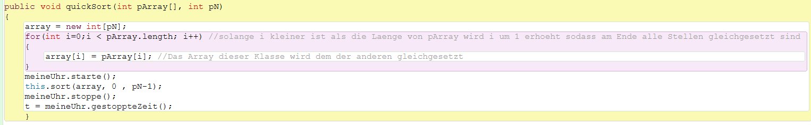
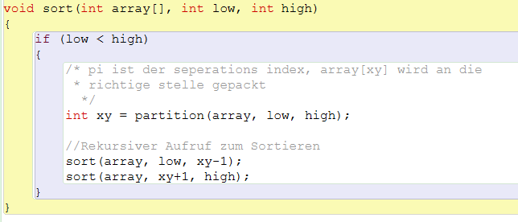
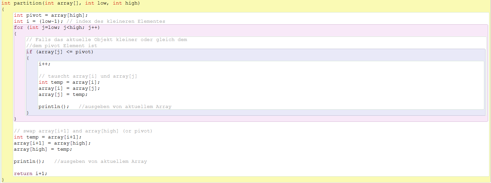
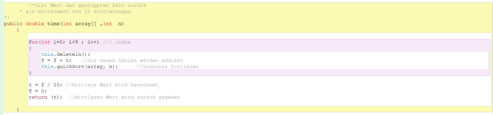

QuickSort funktioniert über das Aufteilen des Ursprungs-Arrays in einen mit den Großen Zahlen und in einen mit den kleinen. Dies geschieht Rekursiv bis alles Sortiert ist.
Zur Sortierung in klein und groß nutzt QuickSort ein Pivot-Element. Das Heißt ein Element mit dem alle anderen Elemente verglichen werden ob diese nun größer oder kleiner sind. Bei gleich großen Elementen ist es egal in welches Array sie gepackt werden weshalb sie in das Array mit den größeren gepackt werden.
Von Quicksort gibt es verschiedene Varianten bei der auswahl von Pivot Elementen:
Die ersten 3 Möglichkeiten ähneln sich insofern, dass sie alle mit hoher Wahrscheinlichkeit nicht ein relativ mittiges (von der Zahlenhöhe) Element als Pivot auswählen.
In unerem Programm benutzen wir die Möglichkeit 2

Diese Klasse ist ein "Vermittler" zwischen der SuMAnwendung() und dem etwas komplexerem QuickSort. Hier ermittelt das Programm die Array länge welche später noch gebraucht wird (als high bzw pivot). Außerdem wird ein "Vermittler Array" gleich dem Original Array gesetzt. So ändert das Programm nichts am Original Array, sodass auf diesen weiterhin zugegriffen werden kann.

Die Hauptbegiffe die von QuickSort() im folgenden genutzt werden
array[] --> der array der im fogenden sortiert werden soll,
low --> Start Index (in diesem fall einfach 0),
high --> Der letzte Index im Array
In dieser Methode wird rekursiv die Methode partition() aufgerufen. In dieser läuft dann das eigentliche Sortieren ab.

In dieser Methode wird das Letzte Element (high bzw. Pivot) an seine Korrekte Stelle gelegt. Daraufhin werden alle Elemente welche einen größeren Wert haben als das Pivot, auf dessen recht Seite verschoben und alle Elemente welche einen kleineren Wert haben kommen auf die linke Seite.
1,5,1,7,4,8,3
^
|
high bzw. Pivot
nach der Methode: 1,1,3,8,4,7,5
^
|
high bzw. Pivot

Die Methode time ist in der Dokumentation über die Zeitberechnung genauer Beschrieben.
QuickSort von Dagh Zeppenfeld